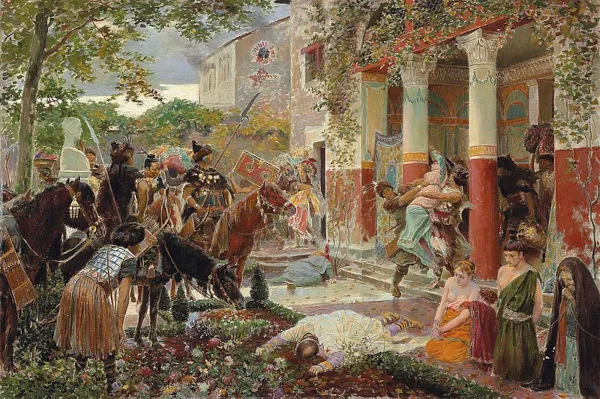
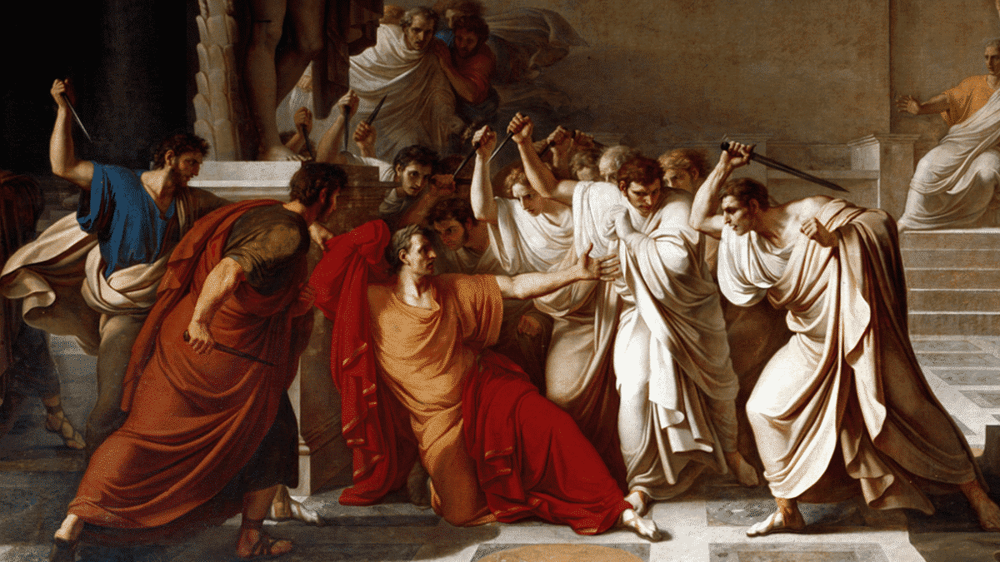
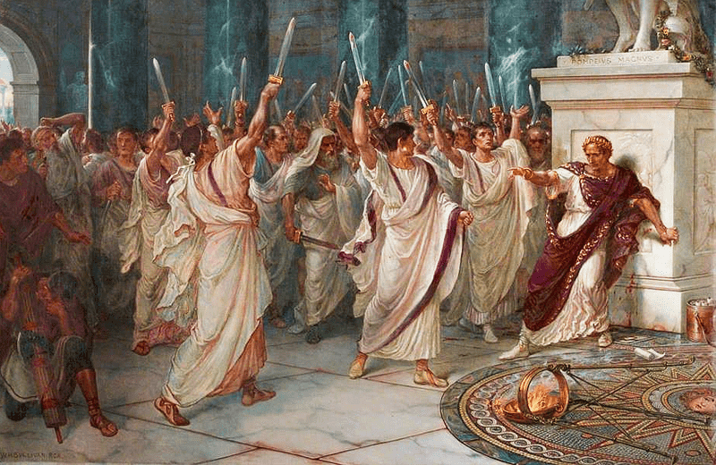

A ESTRUTURA DO PODER
COMO ROMA GOVERNAVA
O poder romano era sustentado por diferentes estruturas responsáveis pela administração, pelas leis, pelo exército e pelo controle da sociedade.

ADMINISTRAÇÃO IMPERIAL
A administração imperial era fundamental para organizar os territórios conquistados por Roma. Depois das conquistas militares, era necessário administrar, abastecer e conectar essas regiões, utilizando estruturas como estradas, pontes, portos, aquedutos e cidades.
SAIBA MAIS
Durante a Pax Romana, a estabilidade política e militar permitiu ampliar essas estruturas e manter uma extensa rede de comunicação e transporte. Dessa forma, a administração romana dependia de uma infraestrutura capaz de conectar diferentes partes do território.
O controle administrativo também envolvia os recursos das regiões dominadas. Alimentos, metais, madeira, escravizados e outros produtos circulavam pelo território, contribuindo para o funcionamento do sistema econômico e para o abastecimento do Império.

LEIS E JUSTIÇA
As leis e a justiça eram fundamentais para organizar a sociedade romana e estabelecer a autoridade sobre os territórios conquistados. Os povos dominados estavam sujeitos ao poder romano, além de impostos e diferentes obrigações impostas pelo Império.
SAIBA MAIS
A organização das cidades também fazia parte desse sistema. Fóruns, templos, termas e outros espaços públicos ajudavam a estabelecer padrões administrativos e culturais romanos nas regiões dominadas. Assim, as leis e as obrigações impostas aos povos conquistados contribuíam para manter a organização do Império. Esse sistema permitia que Roma exercesse sua autoridade sobre as populações e sobre os territórios que havia conquistado.

O EXÉRCITO ROMANO
O exército romano foi essencial para a expansão territorial e para a conquista de diferentes regiões. Depois das conquistas, as tropas também precisavam se deslocar rapidamente para diferentes partes do território, levando equipamentos, alimentos e outros suprimentos.
SAIBA MAIS
As estradas tinham grande importância nesse processo, pois facilitavam o deslocamento dos soldados e dos equipamentos militares. Portos e outras estruturas também contribuíam para o transporte de recursos e para a comunicação entre diferentes regiões.
O exército estava diretamente relacionado ao sistema econômico romano. As regiões conquistadas forneciam diversos recursos, enquanto a rede de circulação permitia transportá-los pelo território. Dessa maneira, a expansão militar e o sistema econômico ajudavam a sustentar um ao outro.